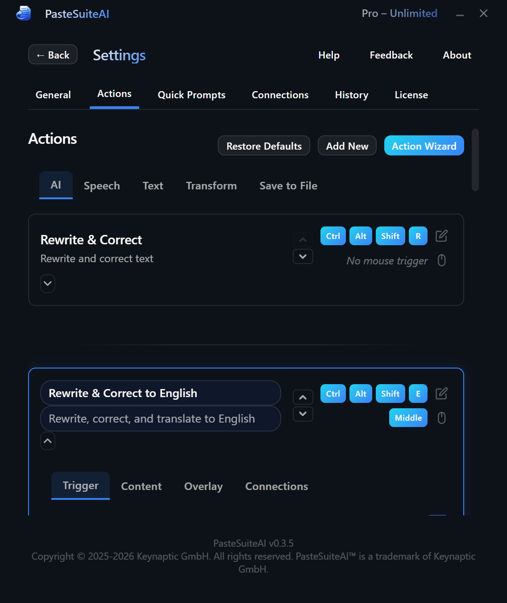

Actions
Configure AI transforms, text paste operations, and regex processing

What Are Actions?
Actions are the core feature of PasteSuiteAI. Each action takes your current text (or selected text) as input, processes it, and delivers the result back to you — by pasting it in place, copying it for later use, or showing a floating result overlay. You can trigger any action from the main panel, via a global keyboard hotkey, or with a mouse button combination.
Actions come in two categories:
- Default actions — shipped with the app. You can edit, disable, or delete them. Deleted or modified defaults are fully restorable via the Restore Default Actions button.
- User-created actions — added by you with the Add New Action button. These are not affected by Restore Default Actions.
Action Modes
Every action has one of three processing modes, selected in the action card:
| Mode | What it does | Requires |
|---|---|---|
| AI Transform | Sends the text to an LLM (or STT service) with your prompt and returns the model's response. | A configured connection (LLM or STT) |
| Static Text Paste | Pastes a fixed template text. Use {selected_text} in the template to embed your current text at a specific position. No AI involved. |
Nothing |
| Local Regex Transform | Applies a regex find-and-replace to the text locally. Fast, private, and completely offline. | Nothing |
Default Actions
These actions are included with every installation. All of them are editable. If you delete or modify a default action, click Restore Default Actions in the Actions tab header to reset all defaults to factory state.
| Action | Mode | Default Hotkey | Default Mouse | Enabled by Default |
|---|---|---|---|---|
| Paste as Plain Text | Local Regex Transform | Ctrl+Shift+Alt+P | — | Yes |
| Diplomatic Rewrite | Static Text Paste | Ctrl+Shift+Alt+D | Middle click | Yes (auto-enables on first LLM connection) |
| Audio to Text | AI Transform (STT) | Ctrl+Shift+Alt+S | X2 button | No (auto-enables on first STT connection) |
| Rewrite & Correct | AI Transform | Ctrl+Shift+Alt+R | — | No (auto-enables on first LLM connection) |
| Rewrite & Correct to English | AI Transform | Ctrl+Shift+Alt+E | X1 button | No (auto-enables on first LLM connection) |
| Remove Empty Lines | Local Regex Transform | — | — | No |
| Simple Correction | AI Transform | — | — | No (auto-enables on first LLM connection) |
| Translate to English | AI Transform | — | — | No (auto-enables on first LLM connection) |
| Translate to German | AI Transform | — | — | No (auto-enables on first LLM connection) |
| Address Correction | AI Transform | Ctrl+Shift+Alt+A | — | No (auto-enables on first LLM connection) |
| Network Switch Interface Check | AI Transform | — | — | No (auto-enables on first LLM connection) |
Paste as Plain Text
Strips all formatting and pastes clean plain text. Always enabled by default and always free regardless of license status.
Diplomatic Rewrite
Prepends a diplomacy-focused instruction prefix before your text. Uses Static Text Paste mode — the template is delivered directly with no LLM call. Designed to be used with an AI chat interface such as ChatGPT or Claude.
Audio to Text
Records from your microphone and transcribes the speech using your configured STT connection. See Speech to Text for setup and configuration details.
Rewrite & Correct
Rewrites text in its original language to be clear, concise, professional, and diplomatically toned, while preserving all original content and intent.
Rewrite & Correct to English
Rewrites text in correct English, preserving all original facts, intent, and meaning with a professional tone.
Remove Empty Lines
Compresses sequences of three or more consecutive blank lines down to two using a local regex. Pattern: (\r?\n){3,} → \n\n. No internet connection required.
Simple Correction
Corrects grammar, spelling, punctuation, and clarity while preserving the original meaning and content.
Translate to English
Translates text into English, preserving the original meaning, tone, and formatting exactly.
Translate to German
Translates text into German, preserving the original meaning, tone, and formatting exactly.
Address Correction
Validates and corrects a postal address — street name, house number, postal/ZIP code, city, and country — and returns the corrected address in the same format as input. Auto-Copy Before is enabled by default so it captures the selected text automatically when triggered via hotkey.
Network Switch Interface Check
Analyzes a Cisco IOS running configuration and reports any interface blocks that do not comply with a defined access port template. Only non-compliant interfaces are reported.
Execution Modes
When an action fires via hotkey or mouse trigger, the Hotkey Execution Mode setting on the action card controls how the result is delivered. When triggered from the main panel, the button you click determines the delivery mode regardless of this setting.
| Mode | What happens | Default |
|---|---|---|
| Paste | Replaces the selected text with the result directly in the active application. | Yes |
| Paste+Clipboard | Pastes the result into the active application and also copies it to the clipboard. | No |
| Clipboard | Copies the result to the clipboard only. Nothing is pasted or typed automatically. | No |
Action Card Configuration
Each action is represented by a card in Settings → Actions. All configuration is done directly on the card.
Name & Description
The action name appears on the main panel button and in all dropdowns. The description is shown as a subtitle beneath the name on the card. Both fields are editable inline — click to edit, then press Enter or click away to save.
Triggers
Each action supports two independent global triggers that fire from anywhere on your system, even when PasteSuiteAI is not in focus:
- Keyboard hotkey — a global key combination (e.g.,
<ctrl>+<shift>+<alt>+p). Click the hotkey field to open the Hotkey Editor modal, press your desired combination, and save. See Keyboard Shortcuts for the full format reference. - Mouse trigger — a mouse button (middle, X1, or X2) with optional modifier keys. Click the mouse icon button to open the Mouse Trigger Editor modal.
Use the Move Up and Move Down arrow buttons to change an action's position in the list. Order determines display order on the main panel.
Enabled & Visible on Panel
| Toggle | Effect when on |
|---|---|
| Enabled | Activates the action. Hotkeys and mouse triggers only fire for enabled actions. AI actions cannot be enabled if the required connection is not configured — the toggle is locked with a warning until you add the connection. |
| Visible on Panel | Shows the action as a clickable button on the main panel. An action can be enabled but hidden from the panel (hotkey-only use), or visible on the panel without a hotkey assigned. |
Hotkey Execution Mode
The three-segment toggle selects what happens when this action fires via hotkey or mouse trigger. See Execution Modes above. Default: Paste.
Auto-Copy & Auto-Enter
| Option | Default | Description |
|---|---|---|
| Auto-Copy Before | Off | Automatically captures the currently selected text before the action runs. Useful for hotkey-triggered actions where you want to transform highlighted text without copying it manually first. Hidden for STT actions, which record from the microphone instead. |
| Auto-Enter After | Off | Automatically presses Enter after the result is delivered. Convenient for chat inputs or search boxes where you want the text submitted immediately. |
Result Overlay
Each action can show its result in a floating overlay window that appears on top of whatever application is in the foreground. Three settings control this:
| Setting | Options | Default |
|---|---|---|
| Overlay Mode | Off — no overlay shown. Always — shows the overlay for both panel and hotkey execution. Hotkey Only — shows the overlay only when triggered via hotkey or mouse trigger, not from the panel. | Off |
| Overlay Position | Cursor / Upper Left / Upper Right / Lower Left / Lower Right | Cursor |
| Duration (seconds) | 0–999. Set to 0 to keep open until dismissed. | 5 |
See Result Overlay for full details on the overlay window behavior and appearance.
Action Mode
Select the processing type: AI Transform, Static Text Paste, or Local Regex Transform. Changing the mode updates the configuration fields shown below the selector. See Action Modes above for a comparison.
Prompt (AI Transform mode)
The textarea where you write the instruction sent to the LLM. The action processes your text using this prompt as the instruction.
- Use
{selected_text}as a placeholder to embed your text at a specific position within the prompt. Without this placeholder, the input text is automatically appended after the prompt in a structured block. - Press Shift+Enter for a newline inside the textarea.
- Click the Prompt Library link below the textarea to browse and insert a saved prompt from your Prompt Library.
Static Text (Static Text Paste mode)
The textarea where you enter the template that will be delivered. Use {selected_text} to embed the text you are working with at any position within the template. No AI connection is required for this mode.
Regex Configuration (Local Regex Transform mode)
Two fields define the transformation:
| Field | Description |
|---|---|
| Pattern | The regex pattern to match. Supports standard regex syntax: character classes, groups, quantifiers, anchors, and inline flags like (?i) for case-insensitive matching. |
| Replacement | The replacement string. Use $0 for the full match, $1, $2, etc. for numbered capture groups. |
A live Preview panel lets you test the transform before saving:
- Type sample input in the Before textarea.
- The After textarea updates automatically as you type (with a short debounce delay).
- If the pattern is invalid, an error message is displayed in place of the output.
- Click the ? button next to the Pattern label to toggle a regex quick-reference panel with examples and a syntax table.
(\r?\n){3,} → \n\n — Collapse multiple blank lines\s+$ → (empty) — Remove trailing whitespace per line^\s+ → (empty) — Remove leading whitespace per line(?i)foo → bar — Case-insensitive replace(\w+)\s(\w+) → $2 $1 — Swap two words
Connection Overrides
By default, each action uses the global default connection for its required capability (LLM, STT, or Vision). You can override this per-action to always use a specific connection, regardless of the global default.
| Dropdown | When shown |
|---|---|
| LLM Connection | Shown for AI Transform actions that require an LLM. Overrides which LLM connection processes this action. |
| STT Connection | Shown for STT (speech-to-text) actions. Overrides which STT connection handles transcription for this action. |
| Vision Connection | Shown when vision-capable connections are available for an LLM action. |
Selecting the default option (displayed as the current default connection name) removes the per-action override. See Connections for how to configure connections and set global defaults.
STT Configuration (STT actions)
Actions that use speech-to-text display an additional STT Configuration panel with per-action audio settings:
| Setting | Description |
|---|---|
| Microphone | Select which input device to use for this specific action, overriding the system default. |
| Noise Suppression | Toggle to reduce background noise in the audio stream. |
| Echo Cancellation | Toggle to reduce echo from speakers picked up by the microphone. |
| Auto Gain Control | Toggle to automatically normalize microphone input volume. |
| Language | Language chips for selecting the spoken input language. The selected language is passed to the STT provider. Multiple languages can be configured per action. |
STT actions also show editable prompt fields that apply to the active STT connection:
- Instruct mode prompt — the system prompt used when the STT connection operates in instruction mode (LLM-assisted post-processing of the transcript).
- Transcribe mode prompt — a context hint passed to the STT provider during pure transcription mode to improve accuracy.
See Speech to Text for full setup and configuration details.
Chain Action
The Chain Action dropdown lets you feed this action's result directly into another action as its input. The chained action runs immediately after this one completes.
- The entire chain counts as a single license action, not one per step.
- Actions in a chain are visually grouped in the list with a link connector icon between them.
- The list is automatically reordered to keep chained actions contiguous.
See Action Chaining below for validation rules and limits.
Delete Action
Click the Delete Action button at the bottom of a card to permanently remove the action. A confirmation dialog appears before the action is deleted. Default actions can also be deleted and restored later via Restore Default Actions.
Actions Tab Header
The header of the Actions tab contains three buttons:
| Button | Description |
|---|---|
| Restore Default Actions | Resets all default actions to factory state (names, prompts, hotkeys, and all settings). Re-adds any defaults that were previously deleted. User-created actions are not affected. A confirmation dialog appears before the restore runs. |
| Prompt Library | Opens the Prompt Library in modal mode. In this context, selecting a prompt copies it to your clipboard so you can paste it where needed. |
| Add New Action | Creates a new user action and scrolls to it automatically. If an LLM connection is configured, the new action defaults to AI Transform mode; otherwise it defaults to Static Text Paste mode. You can change the mode at any time. |
Action Chaining
Action chaining lets you build multi-step pipelines where the output of one action becomes the input of the next, all triggered by a single hotkey press or panel button click.
Example: Chain "Audio to Text" → "Translate to English" → "Simple Correction" to transcribe, translate, and clean up speech in one step.
To create a chain, open an action card and use the Chain Action dropdown to select the next action in the sequence. The app automatically reorders the actions list to keep chained actions contiguous, with a link icon shown between connected cards.
How Chaining Works
- The first action runs and produces its result.
- That result is passed as the input to the next action in the chain.
- This repeats until the chain ends or a step fails.
- The final result is delivered using the first action's execution mode setting.
Validation Rules
- No cycles: An action cannot chain back to itself, directly or indirectly.
- No fan-in: Each action can only have one parent in a chain. Two different actions cannot both chain to the same downstream action.
- Max depth: A chain can be at most 20 actions long.
- Auto-cleanup on delete: If a chained target action is deleted, the chain link on the parent action is automatically cleared.
- Startup sanitization: Invalid chain references (missing target or cycles) are detected and cleared automatically when the app starts.
Licensing
The entire chain counts as a single action for licensing purposes, regardless of how many steps it contains.
Interactive Elements Reference
| Element | Type | Description |
|---|---|---|
| Restore Default Actions | Button (header) | Resets all default actions to factory state after confirmation. |
| Prompt Library | Button (header) | Opens Prompt Library in modal mode; selecting a prompt copies it to clipboard. |
| Add New Action | Button (header) | Creates a new user action and scrolls to it. |
| Name input | Text input (per card) | Editable action display name. Saves on blur or Enter. |
| Description input | Text input (per card) | Editable action description. Saves on blur or Enter. |
| Move Up / Move Down | Buttons (per card) | Reorders the action in the list. Disabled at the top or bottom position. |
| Hotkey editor | Click-to-edit field (per card) | Opens the Hotkey Editor modal to record a new keyboard shortcut. |
| Mouse trigger editor | Icon button (per card) | Opens the Mouse Trigger Editor modal to assign a mouse button combination. |
| Enabled toggle | Toggle switch (per card) | Activates or deactivates the action. Disabling requires confirmation. Locked if required capability connection is missing. |
| Visible on Panel toggle | Toggle switch (per card) | Shows or hides the action button on the main panel. |
| Hotkey Execution Mode | 3-segment toggle (per card) | Paste / Paste+Clipboard / Clipboard. Controls hotkey result delivery. Default: Paste. |
| Auto-Copy Before toggle | Toggle switch (per card) | Automatically captures selected text before running the action. Hidden for STT actions. |
| Auto-Enter After toggle | Toggle switch (per card) | Presses Enter after delivering the result. |
| Result Overlay Mode | 3-segment toggle (per card) | Off / Always / Hotkey Only. Default: Off. |
| Overlay Position | Dropdown (per card, when overlay enabled) | Cursor / Upper Left / Upper Right / Lower Left / Lower Right. Default: Cursor. |
| Overlay Duration | Number input (per card, when overlay enabled) | Seconds before overlay auto-dismisses. Range: 0–999. Default: 5. |
| Action Mode selector | Mode selector (per card) | AI Transform / Static Text Paste / Local Regex Transform. |
| Prompt textarea | Textarea (AI Transform mode) | LLM instruction text. Saves on blur. Supports {selected_text} placeholder. |
| Prompt Library link | Link (AI Transform and Static Text Paste modes) | Opens the Prompt Library inline to browse and insert a saved prompt. |
| Static text textarea | Textarea (Static Text Paste mode) | Template text to paste. Supports {selected_text} placeholder. Saves on blur. |
| Regex Pattern input | Text input (Local Regex Transform mode) | Regex pattern to match. Triggers live preview on change. Saves on blur. |
| Regex Replacement input | Text input (Local Regex Transform mode) | Replacement string. Use $0 for full match, $1/$2 for capture groups. Saves on blur. |
| Regex Preview — Before | Textarea (Local Regex Transform mode) | Type sample text here to test the regex transform live. |
| Regex Preview — After | Textarea, read-only (Local Regex Transform mode) | Shows the transformed result. Displays an error message if the pattern is invalid. |
| Regex Help toggle (?) | Button (Local Regex Transform mode) | Shows or hides the regex quick-reference panel with syntax examples and tables. |
| LLM Connection dropdown | Dropdown (AI Transform actions) | Override the default LLM connection for this specific action. |
| STT Connection dropdown | Dropdown (STT actions) | Override the default STT connection for this specific action. |
| Vision Connection dropdown | Dropdown (when vision connections exist) | Override the Vision connection for this specific action. |
| STT Config Panel | Panel (STT actions) | Microphone dropdown, audio quality toggles (noise suppression, echo cancellation, auto gain control), and language chip selector. |
| STT Instruct prompt textarea | Textarea (STT actions) | System prompt for the active STT connection in instruction mode. Edits the connection directly and applies to all actions using that connection. |
| STT Transcribe prompt textarea | Textarea (STT actions) | Context hint passed to the STT provider in pure transcription mode. |
| Chain Action dropdown | Dropdown (per card) | Select an action to receive this action's result as input. Auto-reorders the list to keep chains contiguous. |
| Delete Action button | Button (per card) | Permanently deletes the action after confirmation. |